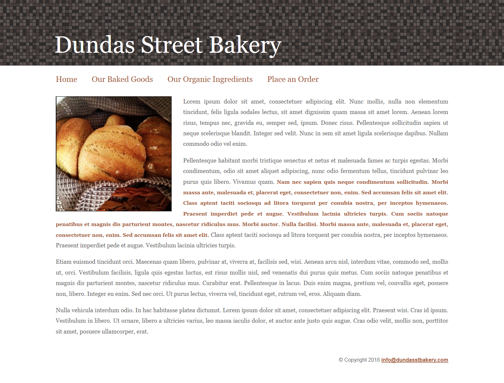
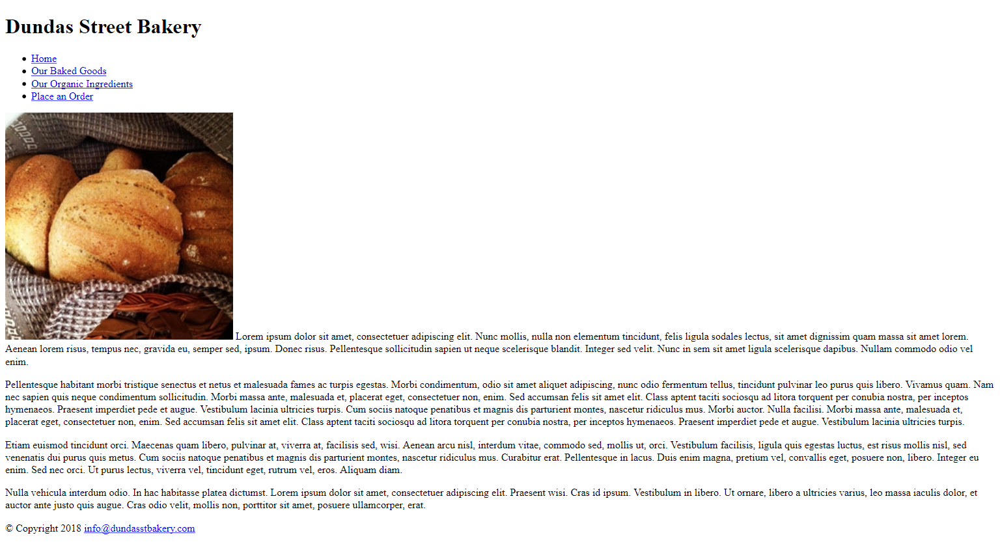

INFO1217 Lab 1
PLEASE READ THE INSTRUCTIONS CAREFULLY
Recreate the following screenshot. You must finish creating the html file and link it to an external stylesheet file. See details below. Note there is no border around the entire page. I have added a border only on the image of the screenshot.
** hint: The h1 in the header overlaps the repeating background image. You will need to adjust the margins on the h1 or the body so the header overlaps the bg image and the links start below the bg image.
| Files |
|
| Links |
|
| Fonts |
|
| Colors |
|
| Sizes |
|
| Resources | You may utilize your class notes and any of the resource links that I provided under the content section of FOL. You may use any text editor. If you run into any problems be aware that there are part marks for everything. You can ask me or your friends for help but each student is responsible for submitting their own original work! Any work that has been shared/copied is considered an academic offence. |
| Submission | When you are finished please zip your folder with all the files contained within it (the images, index.html and main.css file). Upload your zip file to the Lab 1 dropbox. |
| Marks |
|
Final Screenshot - Note there is no border around the entire page. I have added a border only on the image of the screenshot.

Here is the page prior to adding any styling....Note there is no border around the entire page. I have added a border only on the image of the screenshot.
